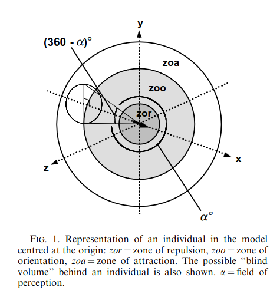

[1] 0.06693954library(CircStats)Loading required package: MASSLoading required package: bootr.test(h)$r.bar
[1] 0.06693954
$p.value
[1] 0.8959093# Also interesting
circ.range(h) range
1 5.477836Criteria:
For each
The directional correlation delay [@Nagy_2010] of individuals i, j is
\[C_{ij} = [\overrightarrow{v_{i}}(t) * \overrightarrow{j}(t + \tau)]_{t}\]
where
The maximum value of the directional correlation function \(C_{ij}\) is at \(C_{ij}(\tau^{*}_{ij})\) where \(\tau^{*}_{ij}\) is the directional correlation delay time. \(\tau^{*}_{ij}\) values focus on the relationship in pairs of individuals, ignoring hierarchy changes caused by other individuals.
Hierarchical networks can be generated using \(\tau^{*}_{ij}\)
The position within group is the position along the front-to-back axis of the group’s bearing (eg. [@Quera_2023; @Harel_2021]). The rank position within group is the ordinal rank along the front-to-back axis of the group’s bearing (eg. [@Burns_2012]). The time spent leading group is an aggregate measure of the time in the first rank position within group. The distance to leader is the geographic distance to the focal individual’s group leader. The direction to leader is the absolute bearing to the focal individual’s group leader.
The group centroid is the mean of individual locations in a group. The distance to group centroid is the distance between an individual’s location and the group centroid. The direction to group centroid is the absolute bearing from an individual’s location and the group centroid. The rank distance to group centroid is the ordinal rank of individuals’ distances from the group centroid.
Polarization measures the uniformity of bearings in a group of individuals [@Wang_2022] on a scale of 0-1 where values near 0 indicate that bearings point in different directions and values near 1 indicate that bearings point in similar directions.
[1] 0.06693954library(CircStats)Loading required package: MASSLoading required package: bootr.test(h)$r.bar
[1] 0.06693954
$p.value
[1] 0.8959093# Also interesting
circ.range(h) range
1 5.477836Directional alignment measures the pairwise differences in bearing between individuals. Interindividual direction measures the pairwise bearings between individual locations.
The behavioural zones metric metric assigns neighbours to three non-overlapping behavioural zones [Couzin_2002]. The “zone of repulsion” is the minimum distance around an individual within which neighbours are expected to move away to avoid collisions. The “zone of orientation” is the next zone around an individual beyond the “zone of repulsion” within which neighbours are expected to orient themselves to the movement of their neighbours. The “zone of attraction” is the last zone around an individual within which neighbours are expected to be attracted to the position of the focal individual. Notably, there is a possibly “blind volume” behind the individual representing the limits of their perception.

| study_id | definitions_of_leader_initiator_etc |
|---|---|
| Baden 2016 | NA |
| Aguilar-Melo 2018 | fission when gte 1 were not observed with a group for 2 consecutive scans; fusion when gte 1 who were previously not observed with group are observed with group for 2 consecutive scans |
| Barocas 2016 | fission and fusion defined as joining and leaving group in subsequent observations |
| Haydon 2008 | fusion where solitary to grouped and fission where grouped to solitary |
| Fortin 2009 | group/fusion when within 100 m; fission when two or more consecutive locations separated by > 100 m |
| Body 2015 | fusion gte 2 groups merging into one; fission one group splitting into gte 2 |
| DellaLibera 2023 | define a fission and fusion event if one or more individuals left or joined the group, respectively. in the rare cases of missing data, missing individuals are not considered as having changed group membership, and individual ‘disappearances’ and ‘reappearances’ in the dataset are not considered as fission–fusion events |
| Wielgus 2020 | group where simultaneously within 1 km or >= 1 km for <= 2 hr; fusion where together then different by one time step; fission reverse |
| Nishikawa 2014 | converged when IID less than 20 m; separated when IID greater than 20 m; converged and separated synonymous with fission fusion |
| Krueger 2014 | NA |
| Lesmerises 2018 | grouped/fission fusion if within 50 m for two relocations; to minimize the false fission events, considered dyad valid if together at t0, t2, but apart at t1; if one missing GPS location, dyad valid if before and after missing loc distance was <50 m |
| Merkle 2015 | group defined as within 100 m within 24 hours |